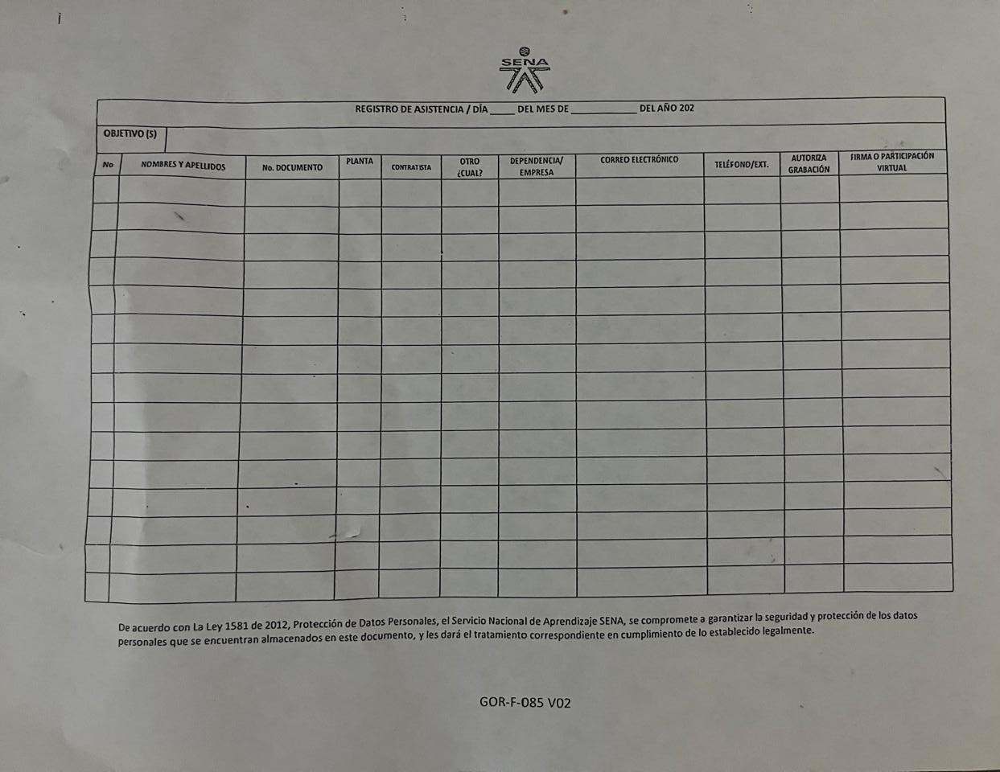
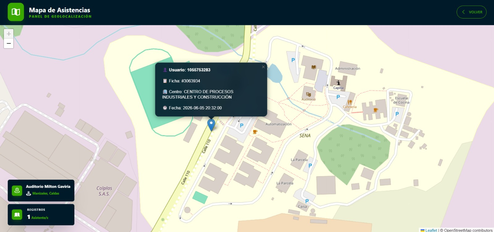
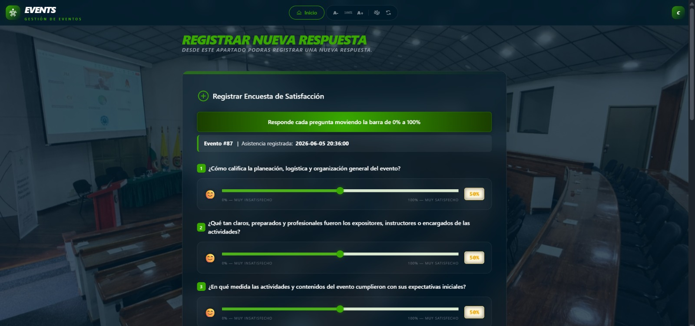

EVENTS.
Sistema web para la gestión, el control organizado y la optimización de eventos institucionales del SENA.
SENA Regional Caldas - Centro de Procesos Industriales y Construcción
Equipo de Desarrollo
El Desafío de la Gestión Manual de Eventos
La gestión actual de actividades institucionales en el SENA Regional Caldas fragmenta la experiencia del usuario y dificulta el control administrativo, demandando una solución tecnológica centralizada y automatizada.
Control de Asistencia Tedioso
El registro mediante planillas físicas resulta lento, ineficiente y propenso a pérdidas en eventos de alta concurrencia.
Evaluación Dispersa
Procesos de satisfacción fragmentados por el uso de formularios aislados, impidiendo la medición de la experiencia en tiempo real.
Análisis de Datos Deficiente
Ausencia de un sistema métrico consolidado que centralice la información y genere reportes estadísticos automatizados.
Agenda Vulnerable
La programación manual incrementa los conflictos de disponibilidad, cruces de horarios y errores en la reserva de ambientes.

Abstract
"El proyecto Events surge como una solución tecnológica diseñada para centralizar, automatizar y optimizar la gestión de eventos en el SENA, facilitando los flujos de trabajo tanto de organizadores como de asistentes."
Abstract
"The Events project emerges as a technological solution designed to centralize, automate, and optimize event management within SENA, streamlining workflows for both organizers and attendees."
Fundamentos del Sistema
Justificación
La implementación de Events optimiza la gestión de actividades institucionales mediante control de asistencia geolocalizado, encuestas de calidad y reportes automatizados. Esto garantiza una administración eficiente, centralizada y respaldada por datos precisos para la toma de decisiones estratégicas.
Contexto Actual del Proceso
- Métodologia Manual, Lenta y Tediosa: Dependencia de planillas físicas y formatos impresos para el control de asistencia y reserva de ambientes.
- Encuestas Aisladas: Recopilación fragmentada de datos mediante formularios e instrumentos de evaluación dispersos.
- Procesos Fragmentados: Carencia de un ecosistema centralizado para consolidar métricas e indicadores institucionales.
Alcance del Sistema
Sustituir la programación manual por un módulo centralizado de reservas y gestión de espacios en línea.
Validar la participación en tiempo real mediante la verificación del radio de ubicación del usuario.
Centralizar la evaluación de los eventos de forma digital e inmediata tras finalizar la actividad.
Consolidar estadísticas, métricas y analíticas automatizadas exportables para la gestión administrativa.
Propósito y Solución
Optimizar la gestión de eventos institucionales.
EVENTS es un entorno web integrado para el SENA Regional Caldas que digitaliza la gestión de espacios, automatiza el control de asistencia geolocalizada y unifica las métricas de satisfacción, sustituyendo los flujos físicos por los digitales en tiempo real.
1. Agendamiento y Espacios
Desplegar un módulo de gestión que controle la asignación, agendas y disponibilidad de ambientes institucionales de forma digital.
2. Registro de Asistencia y Mapeo
Implementar un sistema de asistencia con geolocalización para identificar y almacenar la participación de los usuarios en tiempo real.
3. Medición de Satisfacción
Desarrollar un módulo para la encuesta digital integrada que permita evaluar el nivel de aceptación y calidad de las actividades.
4. Análisis Estadístico
Consolidar apartados métricos para recopilar informacion de manera automatizada y que permitan generar informes que apoyen la toma de decisiones.


Arquitectura & Tech Stack
Frontend
Interfaz y ExperienciaEstructura visual moderna y componentes altamente responsivos.
Backend
Lógica y ServiciosProcesamiento seguro en el servidor, gestión ágil de peticiones HTTP e integración de módulos especializados.
Base de Datos
Persistencia de DatosAlmacenamiento relacional diseñado bajo rigurosos estándares de normalización e integridad de datos.
Impacto y Beneficios
-
Impacto Social
Mejora la organización, fortalece la comunicación mediante encuestas y aporta a la mejora continua.
-
Impacto Económico
Optimiza recursos administrativos y reduce drásticamente tiempos y costos de gestión manual.
-
Impacto Ambiental
Disminuye el uso de papel mediante la digitalización de procesos, promoviendo prácticas sostenibles.
-
Impacto Tecnológico
Impulsa la transformación digital del SENA, modernizando y centralizando la gestión de sus procesos.
Organizadores
Control en tiempo real, reportes automáticos y optimización en la planeación.
Participantes
Registro rápido, opinión directa por encuestas y mayor interacción institucional.
Administradores
Acceso centralizado, visualización clara de datos y mejor seguimiento global.
Institución SENA
Modernización digital, mayor calidad en eventos y decisiones basadas en datos reales.
"EVENTS no es solo un software de registro, es el motor de transformación para la excelencia en la gestión de eventos del SENA."